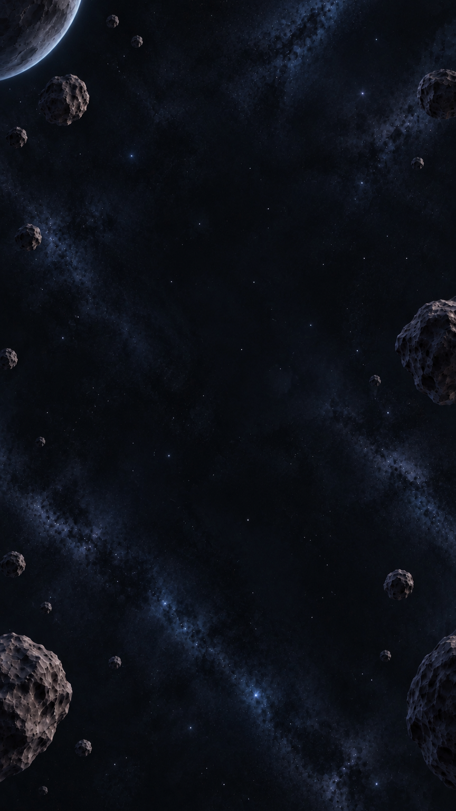
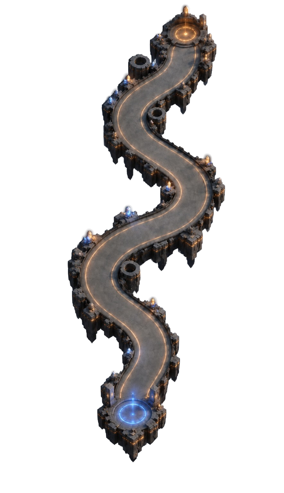
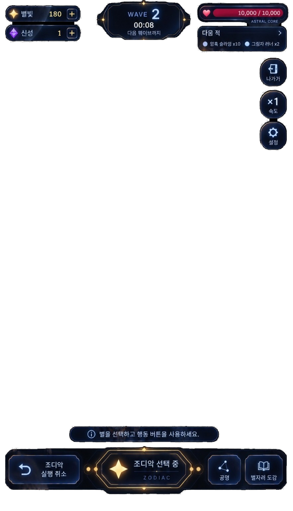

별자리 뽑기
별가루로 새로운 별과
별자리를 만날 준비를 하세요.
확률 · 별 95% · ★ 4% · ★★ 1%★ 천장 0 / 40★★ 천장 0 / 100
현재 별가루✦ 0
별가루로 새로운 별과
별자리를 만날 준비를 하세요.
운석조각에 잠든
고대 우주의 유물을 깨우세요.
우주의 기억을 담은 유물 수집
별의 항로가 전장을 결정합니다
별의 공명 업데이트를 기념하여
별가루 1,000개를 지급합니다.
별자리 & 전투 밸런스 업데이트를 기념하여
별가루 3,000개를 지급합니다.
별자리 수호자님께 운석파편 30개를 보내드립니다.
☄ 운석파편 ×30전투 중 같은 계열의 별자리를 일정 개수 이상 활성화하면 별의 공명 효과가 발동합니다.
별자리를 장착하는 것만으로는 공명이 활성화되지 않습니다. 실제 전투 필드에서 활성화된 별자리 개수를 기준으로 계산됩니다.
각 계열은 현재 달성한 가장 높은 공명 효과만 적용됩니다.
특수계열 별자리는 현재 적색/백색/청색 공명 수에 포함되지 않습니다.



전투를 종료하고 메인 메뉴로 돌아가시겠습니까?
로그인하면 진행 상황을 클라우드에 저장할 수 있습니다.
새 비밀번호를 입력하세요.